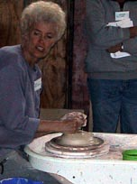
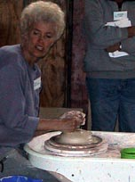
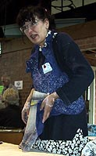
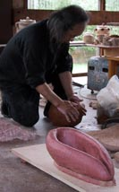

|
ClayFeast
Gulgong
Ceramic
Event Review
 layfeast
Gulgong took part in Australia from the 29 April to 6 May 2001.
This was a truly international event was hosted by Ceramics
Art & Perception editor Janet Mansfield. Demonstrators
and lecturers came from
the USA (Jun Kaneko, John Glick, John Neely, Rimas
VisGirda), Australia (Bill Samuals, Chester Nealie, Jane
Sawyer), Italy (Giampietro Rampini), Norway (Elisa Helland-Hansen),
Hungary (Maria Geszler-Garzuly), Canada (Trudy Golley), Germany
(Hans Fischer), France (Brigitte Penicaud), Japan (Suzuki Goro),
China (I-Chi Hsu), Jeroen
Bechtold (Netherlands), Denmark (David Miller) and Peru
(Polo Ramierez). layfeast
Gulgong took part in Australia from the 29 April to 6 May 2001.
This was a truly international event was hosted by Ceramics
Art & Perception editor Janet Mansfield. Demonstrators
and lecturers came from
the USA (Jun Kaneko, John Glick, John Neely, Rimas
VisGirda), Australia (Bill Samuals, Chester Nealie, Jane
Sawyer), Italy (Giampietro Rampini), Norway (Elisa Helland-Hansen),
Hungary (Maria Geszler-Garzuly), Canada (Trudy Golley), Germany
(Hans Fischer), France (Brigitte Penicaud), Japan (Suzuki Goro),
China (I-Chi Hsu), Jeroen
Bechtold (Netherlands), Denmark (David Miller) and Peru
(Polo Ramierez).
The
conference, this year with an emphasis on functional tableware,
began with demonstrations of making and decorating techniques by
some of the above artists. These continued on for most of the week.
There was also a slide lecture every day, by one of the main artists/demonstrators
and some who came to give the lecture only. Of particular interest
was a slide lecture by I-Chi Hsu, who talked about contemporary
Chinese ceramics, an area we don't often hear about, as well as
memorable talks by Jun Kaneko, Maria Geszler-Garzuly, Hans Fischer
and many others.
Various exhibitions dotted the small country town of Gulgong (north-west
of Sydney) and social activities abounded day and night, i.e. the
four local bars (pubs) were full every evening and nobody got much
sleep... A highlight of the conference was a 'field trip' to Janet
Mansfield's property, site of previous events, where an experimental
miniature Hoffmann kiln was fired (more on this next week) and where
there was a display of fireworks in the evening.. Towards the end
of the event, a forum on educational issues was held, where there
was some lively debate relating to current ceramic educational issues
in Australia.
With
350 participants, including many from overseas, this event was a
great opportunity for learning, networking and just for fun. Janet
Mansfield can be congratulated for bringing so may diverse people
together at this conference and for pulling it off so smoothly.
All those who were there will be looking forward to the next event!
More Articles
|